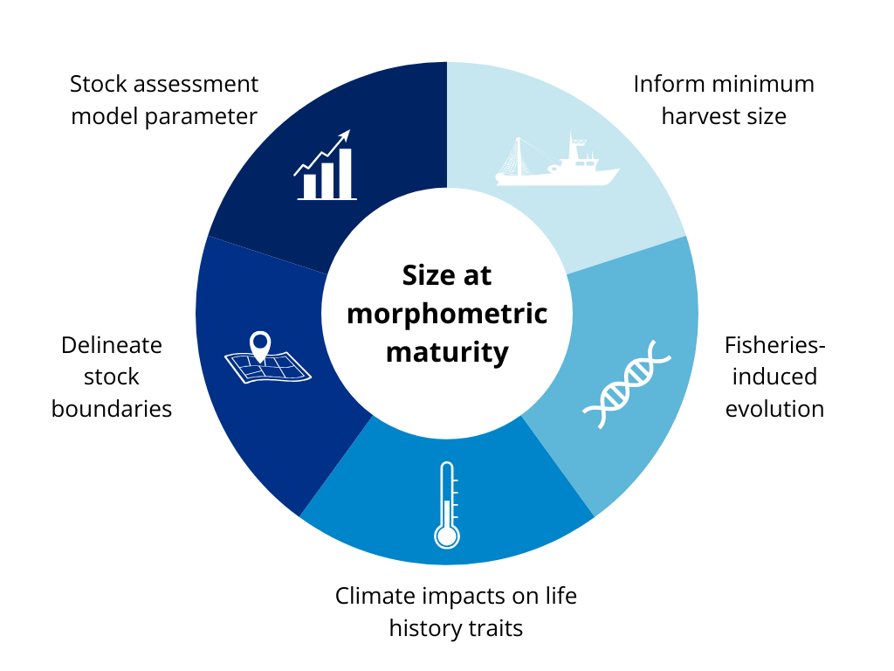

2 Importance of size at maturity for management
Globally, crustacean (shrimp, lobster, and crab) fisheries are growing faster than any other group of fisheries, and represent some of the highest-value seafood products on the market (Boenish et al. 2022). Accurate estimates of size at maturity are crucial for the sustainable management of these valuable fisheries.

2.1 Minimum harvest size
Size at maturity is a key consideration when setting minimum size regulations, as setting a minimum legal size below the size at 50% sexual maturity (SM50) can significantly restrict the reproductive potential of a population. When minimum size limits are set above SM50, high yield and spawning biomass can often be maintained even under high fishing pressure (Prince and Hordyk 2019).
2.2 Stock assessment & model inputs
Effective management of crustacean fisheries depends on stock assessments that estimate current biomass levels, evaluate the health of the stock compared to historical levels, and predict the effects of potential management actions. The difficulty of aging crustaceans means that size-structured models are typically preferred over age-based methods for stock assessment purposes (Punt, Huang, and Maunder 2013; Punt, Haddon, and McGarvey 2016). SM50 is a fundamental parameter in frequently used stock assessment models like Length-Based Spawning Potential Ratio (LBSPR), which are especially useful for data-limited fisheries (Prince and Hordyk 2019; Hordyk et al. 2015). Stock assessment models can be highly sensitive to shifts in size at maturity inputs like SM50, particularly when combined with changes in growth parameters such as molt probability and molt increment probability (Hodgdon et al. 2022). Understanding the effect that climate-driven shifts in life history input parameters like SM50 have on stock assessment model outputs is critical for future modeling efforts and fisheries management (Hodgdon et al. 2022).
2.3 Accounting for spatial structure
2.4 Impacts of harvesting & climate
Monitoring changes in size at maturity is also an important tool to assess the impacts of environmental changes and fishing pressure on fish and invertebrate life-history characteristics (Audzijonyte, Kuparinen, and Fulton 2013; Lappalainen et al. 2016). For example, there is strong evidence that size-based fishery selection has led to declines in female SM50 for female American lobster (Homarus americanus) in the United States and Canada (Haarr et al. 2018; Waller et al. 2019, 2021).
Climate impacts go here
Thus, a better understanding of size at maturity will contribute to broader work to assess the effects of climate change on regional fisheries harvest scenarios (NOAA Fisheries 2024). My project will support federally mandated efforts to optimize and diversify sustainable seafood production and fishing opportunities while ensuring the long-term sustainability of fisheries through effective and efficient management.